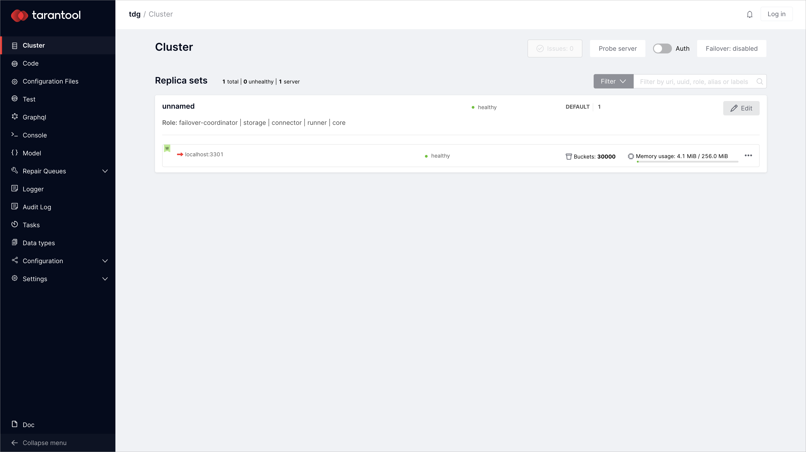
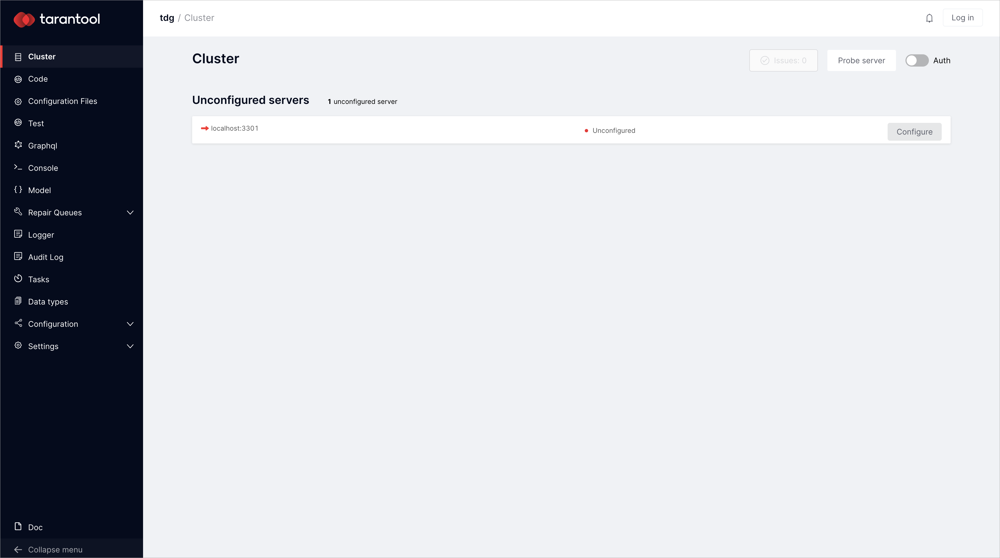

First manual deployment¶
This guide explains how to quickly deploy Tarantool Data Grid (TDG) manually for the first time. As a result, you will get a single node TDG cluster deployed locally.
Note
For TDG deployment, you need Linux OS (CentOS 7/RHEL 7 are preferable). Otherwise, you’ll need to set up a virtual machine with Linux OS first.
Getting a TGZ file for deployment¶
To deploy Tarantool Data Grid, you need an RPM (.rpm), TGZ (tar.gz), or Docker image (docker-image.tar.gz) file.
For the first deployment, a TGZ file will do just fine.
It is easier to deploy and does not require root access.
Download a TGZ file of the latest version at the customer zone of tarantool.io.
Make sure your browser did not unarchive the downloaded file: the file extension should be tar.gz.
If you do not have access to the customer zone, you can get one by applying this form or writing to sales@tarantool.io.
Deployment¶
Unpack
tar.gzfile:$ tar xzf tdg-<VERSION>.tar.gz # change <VERSION> for the TDG version that you've downloaded
Run a single node TDG cluster inside the unpacked
tar.gzfile:$ ./tarantool ./init.lua --bootstrap true
If you already have Tarantool installed, make sure that now, while deploying TDG, you use the Tarantool version that is packed in the just downloaded
tar.gzarchive.Go to http://127.0.0.1:8080/ to check the deployed TDG:
By running
tarantool ./init.lua --bootstrap true, you’ve deployed a configured instance with assigned roles. If you want to try and assign roles by yourself, run:$ tarantool ./init.luaAs a result, you’ll get an unconfigured TDG instance:
In case you want to start over and deploy TDG from scratch, don’t forget to delete the configuration, xlog, and snap files that TDG created during the first deployment:
$ rm -rf ./dev/output